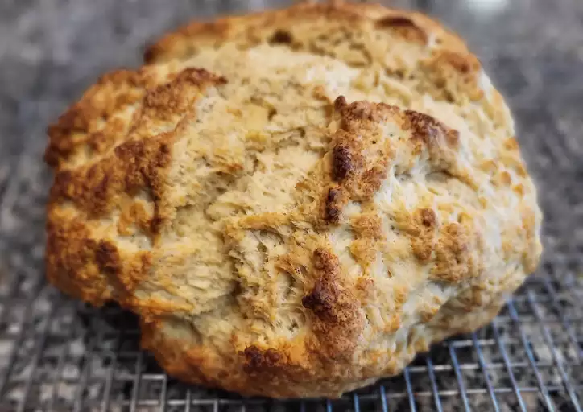

Home page
The Amazingly Easy Irish Soda Bread

Irish soda bread made with buttermilk and basic ingredients. The buttermilk gives this crusty loaf a good flavor. It's the best Irish soda bread around!
This classic Irish soda bread is perfect for St. Patrick's Day, but you'll want to make it all year long.
Ingredients:
- Flour: This classic Irish soda bread starts with all-purpose flour.
- Margarine: Margarine has a higher water content than butter, so the results are often softer. If you want, you can substitute Irish butter.
- Sugar: Four tablespoons of sugar add the perfect amount of sweetness.
- Leaveners: Baking soda and baking powder act as leaveners, which means they help the bread rise.
- Salt: A pinch of salt enhances the overall flavor of the Irish soda bread.
- Buttermilk: A cup of buttermilk adds flavor and helps the loaf rise even higher.
- Egg: An egg lends richness and flavor. Plus, it helps bind the dough together.
- Butter: Brush the unbaked loaf with a mixture of buttermilk and butter before you bake it for extra flavor and shine.
Steps:
- Preheat the oven to 375 degrees F (190 degrees C). Lightly grease a large baking sheet.
- Mix flour, softened margarine, sugar, baking soda, baking powder, and salt together in a large bowl. Stir in 1 cup of buttermilk and egg. Turn dough out onto a lightly floured surface and knead slightly. Form dough into a round and place on the prepared baking sheet.
- Combine melted butter with 1/4 cup buttermilk in a small bowl; brush loaf with this mixture. Use a sharp knife to cut an 'X' into the top of the loaf.
- Bake in preheated oven until a toothpick inserted into the center of the loaf comes out clean, 45 to 50 minutes. Check for doneness after 30 minutes. You may continue to brush the loaf with the butter mixture while it bakes.
Other recipies:
-
Homemade Lasagna
-
Potato Scones
-
Back to home page